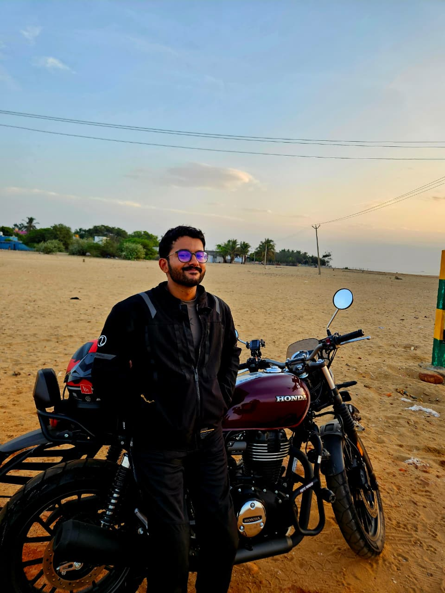

01 / Fleet coordination
RYNTARA
One map for drone and rover telemetry. Operators can check proposed routes against restricted areas and other traffic before approving them.
Applied AI · Robotics · Mechanical engineering
I’m Paramesh, a mechanical engineer and Parts Data Analyst at GE Vernova. I build applied AI tools and robotic systems with the operator and the physical system in mind.
Enterprise AI · GE Vernova
Over 40 hours → Under 4 hours
Cycle time for an internal document workflow
02 / Flight
My three-rotor VTOL design. Scroll to lift off, tilt the propellers, and transition to fixed-wing flight.
01 / Approach
Mechanical engineering taught me to ask what can move, what can fail, and what needs a margin. I bring that mindset to robotics and applied AI, where a good result needs clear constraints and a way to check it.
Identify who needs the result and what decision it should help them make. Set a way to measure success before choosing the tool.
Turn loads, clearances, tolerances, and motion limits into engineering requirements. For data and AI workflows, define the inputs, allowed outputs, and checks with the same care.
Use AI for bounded tasks such as drafting or comparing options. Give it a clear input, a well-defined output, and a way to catch errors.
Check what happens when inputs are noisy, assumptions break, or a component reaches its limit. Use the results to decide what needs to change.
02 / Enterprise experience
I designed and deployed an LLM workflow at GE Vernova that cut the cycle time of an internal document process from over 40 hours to under 4 hours. The workflow combined hybrid retrieval with automated processing across large document collections.
I used large language models to process retrieved document content, then automated the formatting of the results and tracked input and output token usage.
Retrieval-augmented generation gives a model relevant source material. I combined semantic search for passages with similar meaning and keyword search for exact matches.
I evaluated BERT-based embeddings for semantic retrieval. Embeddings represent text as vectors, which a vector database can index to find passages with similar meaning.
I compared whether models completed the task, returned valid outputs, and rejected invalid requests. I also tracked latency and weighed token usage, cost, and compute needs when selecting models.
Model evaluation
Published benchmark · Nemotron
Nemotron 3.5 Bolt had the highest pass count among four configurations tested on the same 12 cases. All four failed the adapter generation tests.
See the evaluation results03 / Selected projects
Fleet coordination, robot simulation, and trajectory planning.
01 / Fleet coordination
One map for drone and rover telemetry. Operators can check proposed routes against restricted areas and other traffic before approving them.
02 / Robotics workspace
A robotics IDE for configuring robots, building scenes, and running task plans. The demo follows a plan as it runs in Isaac Sim.
03 / Trajectory-planning research
Physics-based Hierarchical Adaptive Spatial Evasion studies how multiple vehicles can coordinate their paths. It combines local A* planning with conflict detection and priority-weighted evasion.
04 / About
I earned my BTech in Mechanical Engineering from Amrita Vishwa Vidyapeetham. During my internship at AEREO, I analyzed UAV wing substructures, including honeycomb and sandwich designs.


I work with engineering data, software, and automation to support engineering and business processes.
About GE VernovaI enjoy volunteering with pets and going for motorcycle rides.
05 / Contact
I’d be glad to talk about applied AI, robotics, or engineering tools.
parameshsriram2020@gmail.com